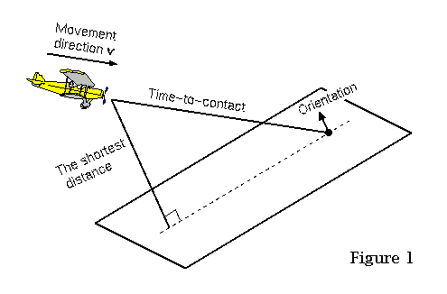
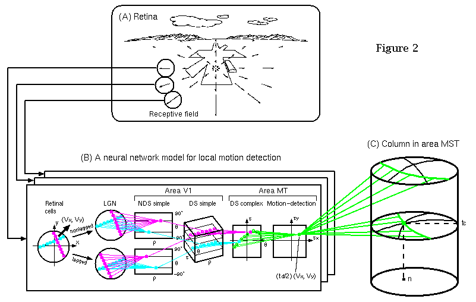

Neural network model for detecting planar surface from optical flow in area MST of the visual cortex
Hiroaki Okamoto
Autonomous Systems Laboratory, Fujitsu Laboratories Ltd.
e-mail: okamoto@flab.fujitsu.co.jp
The goal of this study is to model a neural network, linking retinal and
MST cells, for detecting spatial parameters of a planar surface (Fig.
1)--i.e., orientation, time-to-contact (or time-to-collision), and the
shortest distance--from an optical flow field. To this end, the model is
attempted to be implemented on computer.

A neural network model for local motion detection (Fig. 2(B)) we proposed
[1, 2] enables each local motion in the respective receptive-field to be
detected as the coordinates of a cell activated in the motion-detection
cell array most intensively. Then, a neural network modeled in this study,
linking the detection cells and MST cells, enables the motions to be
integrated to detect the plane's orientation, time, and distance as the
coordinates of a cell (e.g., n and tc in Fig. 2(C)) activated in the MST
column most intensively. This MST model is based on two types of algorithm
[3]; an algorithm type, using the polar transformation (or duality) and a
cross-ratio transformation we found based on projective geometry,
integrates the motions to detect the plane's time and orientation; the
other type, using a small-circle transformation we found, integrates the
motions to detect the plane's distance and orientation.

(19k PNG image)Click to zoom up
[1] Kawakami, S. & Okamoto, H. (1996). A cell model for the detection of
local image motion on the magnocellular pathway of the visual cortex.
Vision Res., vol. 36, pp. 117-147.
[2] Okamoto, H., Kawakami, S., Saito, H., Hida, E., Odajima, K., Tamanoi,
D., & Ohno, H. (1999). MT neurons in the macaque exhibited two types of
bimodal direction tuning as predicted by a model for visual motion
detection. Vision Res., vol. 39, pp. 3465-3479.
[3] Kawakami, S., Matsuoka, H., Okamoto, H., & Hosogi, S. (2000). A neural
network model for detecting planar surface spatially from optical flow in
area MST of the visual cortex. Trans IEICE, vol. J83-D-II, pp. 2786-2797.